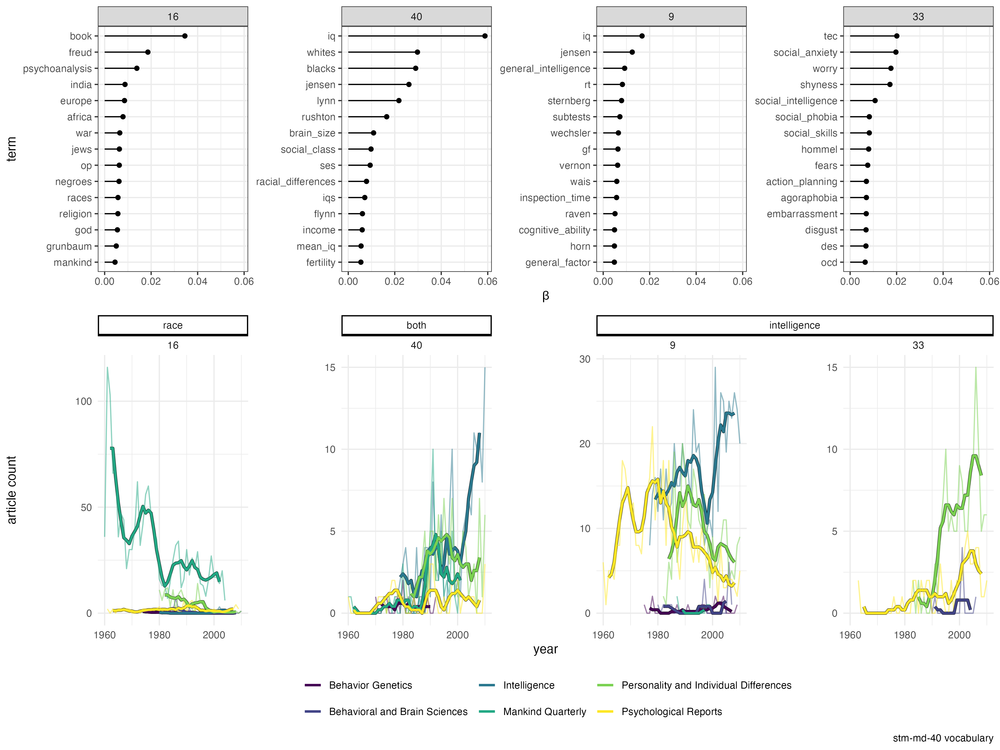

![]()
library(tidyverse)
library(ggforce)
theme_set(theme_bw())
library(tmfast)
library(glue)
library(tictoc)
library(memoise)
set.seed(2024-03-18)
## Simulation parameters
j = 10 ## number of journals
k = 20 ## total number of topics
N = 100 ## papers per journal
vocab = 1000 ## vocabulary size
paper_size = 500 ## length of each paperRace Science in Mainstream Psychology, 1960-2010
Abstract
Anthropologists and human geneticists have long rejected race science, research that can be utilized to purportedly justify racial inequality and colonialism. But race science has persisted, at the very least on the margins of the mainstream scientific community. In this study, bibliometric and text mining methods were used to trace the appearance of race science discourse in both mainstream behavioral science journals and the parascholarly journal Mankind Quarterly from 1960 to 2010. Our analysis found two distinguishable lines of race science discourse. One is strongly associated with Mankind Quarterly, while the other — emphasizing race and intelligence — is strongly associated with mainstream psychology journals, especially Intelligence and Personality and Individual Differences. We compare psychology’s response to race science to those of other fields, and discuss the social responsibility of scientists with respect to race science.
Keywords
race science, race and intelligence, psychology, behavior genetics, text mining, topic modeling
Introduction
By the end of the Second World War, a combination of technical developments in anthropology and genetics, along with revelations of Nazi atrocities, had led most members of the scientific community to reject attempts to scientifically justify racial inequalities and colonialism (Barkan 1992). But eugenic thinking and scientific racism persisted throughout the second half of the twentieth century, and recent work has found that white supremacists continue to attempt to use scientific research to justify racial violence (Duster 2003; Panofsky, Dasgupta, and Iturriaga 2021; Pronczuk and Ryckewaert 2022).
The aim of the study reported here was to trace race science in the scholarly and parascholarly literature, examining the ways that fringe ideas can present themselves in mainstream venues as legitimate scholarly inquiry.
We first propose a distinction between scientific racism, race science, and race science discourse. Scientific racism refers to the social practice of purporting to justify racial inequality and colonialism by appealing to the epistemic authority of science. Race science refers to scientific and/or pseudoscientific research, including research products (journal articles, etc.), that can be utilized for scientific racism. Race science discourse refers to a broader category, any treatment of race science as a legitimate area of scientific research.
We stress that race science discourse includes methodological and empirical critiques of race science. We argue that such technical critiques — even when they are intended to undermine race science — can instead legitimize it, by creating an impression among the broader public that race science is a matter of ordinary, reasonable, mainstream scientific debate. For example, the Flynn effect (the finding that IQ scores have increased over time) poses a serious empirical challenge to hereditarian claims of racial differences in intelligence, and has been extensively debated in the mainstream scientific literature. Most members of the general public lack the time and skills needed to assess these debates for themselves. So, we suggest, they are quite likely to use a “middle ground” heuristic to understand these debates as ordinary, reasonable disagreement among mainstream scientists. Some experts say one thing, other experts say something else, and so “the truth is somewhere in the middle.” Tobacco and other industries have exploited this heuristic to “manufacture doubt” about the hazards of their products (Fernández Pinto 2017). In this way technical critiques of race science based on the Flynn effect could legitimize race science. So, while empirical research supporting the Flynn effect is usually not itself race science, it can still be race science discourse.
The distinction between scientific racism, race science, and race science discourse allows us to bracket the intentions and attitudes of the researchers involved in any particular piece of research or debate. For the purposes of the current study, it is not important whether, for instance, psychologist Arthur Jensen is or is not correctly labelled a scientific racist (Jackson Jr. 2022). But it is important that much of Jensen’s research was useful and indeed utilized to purportedly justify racial inequality, and so unambiguously qualifies as race science.
Histories of scientific racism in the twentieth century have often emphasized the Pioneer Fund and the parascholarly journal Mankind Quarterly (MQ) (Barkan 1992; Mehler 1989; Winston 1998, 2020; Tucker 2002; Schaffer 2007; Saini 2019, 2022; Adams and Pilloud 2021). Pioneer was formed in 1937, during the waning years of the eugenics movement in North America (Barkan 1992), with the aim of “support[ing] academic research and the '[sic]dissemination of information, into the ‘problem of heredity and eugenics’ and ‘the problems of race betterment’” (Mehler 1989, 21, quoting Laughlin). MQ was founded in 1960 by biologist R. Ruggles Gates (1882-1962), psychologist Henry Garrett (1894-1973), and non-academic anthropologist G. Robert Gayre (self-styled as “Gayre of Gayre and Nigg”; 1907-1996). Gates’ professional status had risen and fallen with eugenics and the explicit scientific racism of the 1920s, and by the end of the Second World War he was thoroughly marginalized (Winston 1998). In contrast, Garrett had been president of the American Psychological Association in 1946 and chair of Psychology at Columbia from 1941 to 1955 (Winston 1998).
In the landmark case Brown v Board of Education of Topeka (1954), the US Supreme Court banned de jure educational segregation. The Court’s decision relied on expert testimony from psychologists and education researchers; but the segregationists also put forward their own experts, including Henry Garrett (Winston 1998; J. P. Jackson Jr. 2005; Schaffer 2007). As part of this segregationist reaction, MQ was created to provide a favorable venue for race scientists to publish their views, on the grounds that an “equalitarian dogma” created a censorious “taboo” against their research in mainstream publications (Tucker 2002; J. P. Jackson Jr. and Winston 2020).
In light of the scientific racist origins of Pioneer and MQ, and the significant attention MQ has received in recent historiography, we hypothesized that MQ might have served as an “incubator” for race science discourse, with ideas originating in MQ before appearing within the scientific mainstream. Establishing venues for favorable research is another key element of the “tobacco strategy” for manufacturing doubt (Fernández Pinto 2017). Specifically, we hypothesized that bibliometric and text mining analyses would show race science discourse appearing first in MQ, and subsequently appearing in mainstream publications. This hypothesis was not supported. Instead, mainstream psychology journals provided a venue for a distinct form of race science discourse, based on intelligence research and originating outside of MQ.
Results
Mankind Quarterly and Pioneer-funded researchers
We identified 16 researchers who had received funding from Pioneer; 14 of these researchers had profiles in the Web of Science (WoS) author search, allowing us to identify 13 WoS-indexed journals that had published 6 or more of these authors. See Table 1 and figure 1. As the affiliations in Table 1 indicate, almost all of these researchers were faculty at major research universities.
| name (birth-death) | field | affiliation | WoS doc. count |
|---|---|---|---|
| Thomas J. Bouchard, Jr. (1937-) | psychology | Univ. Minnesota | 184 |
| Brunetto Chiarelli (?-?) | anthropology | 91 | |
| Hans Eysenck (1916-1997) | psychology | King’s College London | 661 |
| Robert A. Gordon (1932-) | sociology | Johns Hopkins | 0 |
| Linda Gottfredson (1947-) | psychology | Univ. Delaware | 71 |
| Garrett Hardin (1915-2003) | ecology | UC Santa Barbara | 75 |
| Joseph M. Horn (1940-) | psychology | UT Austin | 68 |
| Lloyd Humphreys (1913-2003) | psychology | Univ. Illinois | 0 |
| Arthur Jensen (1923-2003) | psychology | UC Berkeley | 235 |
| Michael Levin (1943-) | philosophy | CCNY | 96 |
| Richard Lynn (1930-2023) | psychology | Ulster University* | 288 |
| R. Travis Osborne (1913-2013) | psychology | Univ. Georgia | 59 |
| J. Phillippe Rushton (1943-2012) | psychology | Univ. Western Ontario | 277 |
| Audrey M. Shuey (1900-1977) | psychology | Randolph-Macon Women’s College | 10 |
| Philip A. Vernon (1950-) | psychology | Univ. Western Ontario | 227 |
| Daniel Vining, Jr. (1944-) | demography | Univ. Pennsylvania | 33 |

Figure 1 shows that, while MQ is among the “Pioneer-publishing” journals, a number of mainstream journals are more prominent: Personality and Individual Differences (PID), Intelligence (Int), Behavior Genetics (BG), and Psychological Reports (PR). In addition, only psychologist Richard Lynn appears to have published heavily in MQ. Lynn became an assistant editor of MQ in 1979 (vol. XX, Nos. 1 & 2) and is listed as editor-in-chief on MQ’s current website as of 2023-07-21. He was also president of Pioneer from the death of psychologist J. Phillippe Rushton in 2012 (Beirich 2013) until his own death in 2023. By contrast, a number of Pioneer-funded researchers have published a significant number of papers in PID, Int, and to a lesser degree BG: Bouchard, Eysenck, Jensen, Rushton, Vernon, and also Lynn.
Personality and Individual Differences (PID) was founded in 1980, with Eysenck as editor-in-chief and an editorial board including Jensen and Lynn. In the inaugural editorial, Eysenck identified “studies of the genetic determinants of individual differences in the areas of personality and intelligence” as one of the journal’s eight major areas of interest. Eysenck remained editor-in-chief until his death in 1997. In 2005 the editorial board still included Jensen and Lynn. PID was first published by Pergamon Press, a mainstream academic press, and today is published by Elsevier.
Intelligence (Int) was founded in 1977, with psychologist Douglas Detterman as editor-in-chief from the founding until 2016. Lloyd Humphreys was on the editorial board starting from 1977; by 1990 he had been joined by Jensen and Philip Vernon. Richard Lynn joined the editorial board sometime between 1998 and 2002. (Archive copies of the Int editorial board page are not available from the journal’s website from 1999 through 2001.) Int has been criticized for including Lynn and Gerhard Meisenberg — who was editor-in-chief of MQ in 2015-18 — on its editorial board until 2018 (Saini 2019). Int is published by Elsevier.
Topic model analysis identifies race science discourse
The fact that Pioneer-funded researchers published heavily in two mainstream psychology journals does not tell us anything about the content of their publications or the claims of their research. We assembled a full-text corpus of articles published in MQ, PID, Int, BG, PR, and Behavior and Brain Sciences (BBS) between 1960-2010 and used topic modeling across three different sizes of vocabulary (“large,” “medium,” and “small”) to identify topics discussing race, intelligence, and both. (See the materials and methods for a discussion of some important limitations with this corpus: journals published by the American Psychological Association could not be included, BBS bundles focus articles and commentaries together in a way that confounds simple document counts, and an unknown number of relevant documents in PID could not be included.)

Figure 2 focuses on three topics identified in one of the 24 fitted topic models; see figures 6, 7, 8, 9, 10, 11 for all topics from all models, and figures 12, 13, 14 for selected topics from all models. In the focal model, topic 07 is strongly associated with MQ: MQ published dozens of articles in this topic each year, and no other journal ever published more than a handful. The “Silge plot,” showing the top 15 terms in the topic (“Topic Modeling” 2017), contains a number of racial terms (races, whites, negroes and potentially europe, africa, india, and japan); as well as book, likely reflecting the fact that MQ published a number of book reviews, while the mainstream journals either did not publish book reviews or these were not available for the corpus.
Topic 22 is strongly associated with Int and PID in the same way that 07 is associated with MQ. The Silge plot does contain jensen, as well as a reference to Raymond Cattell, who played a major role in the development of factor analysis and intelligence testing but also advocated for eugenics, fascism, and Nazi race science (Mehler 1997). However, the other authors named in this topic — John Horn and Peter Bentler — do not appear to have contributed to scientific racism. Instead this topic appears to identify “mainstream” (non-race science discourse) intelligence research, especially factor analysis and the debate over whether intelligence is unidimensional or multidimensional. (Three other topics only associated with mainstream intelligence journals and terms were also identified by this topic model.) This topic indicates that the model is able to distinguish “mainstream” intelligence research from race science discourse.
The Silge plot for topic 24, by contrast, suggests a distinct race science discourse topic, with multiple racial terms (whites, blacks, racial_differences, races, race_differences) and the names of three prominent Pioneer-funded researchers, jensen, lynn, and rushton. Independent qualitative coding of 121 papers in this topic (those with \(\gamma > 0.97\) and published in journals other than PR) confirmed this interpretation, with 108 (89%) coded as race science discourse by both authors (Cohen’s \(\kappa = 0.86\)); see SI Appendix, section 3.
In almost all years, most papers in topic 24 were published in mainstream journals rather than MQ. Jensen’s “How Much Can We Boost IQ and Scholastic Achievement?” (Jensen 1969) was published in 1969 in Harvard Educational Review (not included in this study), and the time series indicates that, in the early 1970s, there was an increase in articles in topic 24 in both PR and MQ (the only two journals in our corpus that were active at the time). MQ shows another sharp increase in the late 1980s; using content analysis, Adams and Pilloud found that psychology was the dominant discipline in MQ in the period 1992-2018 (Adams and Pilloud 2021). PID published multiple papers in topic 24 almost immediately after it was founded, with Int showing a more gradual increase between the mid-1970s and mid-1990s.
These qualitative results are similar across models using the large and medium vocabularies; see 12, 13, 14. Across all vocabularies, as \(k\) increases, multiple different “intelligence only” topics emerge, apparently picking out different methods or aspects of intelligence research. For example, there is often an “intelligence only” topic that is highly associated with BG. MQ never has many publications in an “intelligence only” topic, except for \(k=10, 20\) in the large vocabulary; in these two models, there is neither a “race only” nor “race-and-intelligence” topic.
In the large and medium vocabularies, there is usually one “race only” topic and/or one “race-and-intelligence” topic, and the “race only” topic is always virtually exclusive to MQ. In the medium vocabulary, “race-and-intelligence” is more prevalent in mainstream journals than in MQ; except for \(k=20\), where there is no “race only” topic. In the large vocabulary, a “race only” topic does not emerge until \(k=40\), and there are not simultaneous “race only” and “race-and-intelligence” topics until \(k=60\). However, in \(k=60, 70\) there are both topics, and they follow the same pattern seen in the medium vocabulary: “race only” is almost exclusive to MQ, and “race-and-intelligence” is more prevalent in mainstream journals.
Unlike the other two vocabularies, in the small vocabulary there are two “race only” topics for \(k \geq 50\). Across values of \(k\), topic V04 is more prevalent in PS through about 1990; the other “race only” topic is typically more prevalent in MQ, but also includes a few articles from PS. For \(k \geq 40\), the small vocabulary models have distinct “race only,” “race-and-intelligence,” and “intelligence only” topics; “race-and-intelligence” is always predominantly mainstream, and increases in prevalence over the course of the 1980s. The “extra” “race only” topic appars to fade out quickly over the course of the 1980s, and its top terms include race differences, rushton, and crime. So one possibility is that that the small vocabulary is able to pick out a distinct line of race science discourse that is focused on crime and/or other behaviors, rather than intelligence, and was replaced with a more intelligence-focused line, perhaps in a way that anticipated publication of The Bell Curve in 1994. However, we think it’s more plausible that this separation is an artifact due to the very small size of this vocabulary, with many fewer terms than documents.
Race science discourse, behavior genetics, and psychology
BG published very few articles in any race-and-intelligence topic identified by any of the 24 topic models. But, among both (other) academics and the general public, the field of behavior genetics is strongly associated with race science, and specifically race-and-intelligence research. Panofsky (Panofsky 2014) argues that, prior to Jensen’s 1969 paper, behavior genetics emphasized the study of non-human animals and intentionally avoided associations with eugenics and public controversy more generally. In response to Jensen, critics such as Lewontin offered broad critiques of behavior genetics as such, and behavior geneticists in turn adopted a radical conception of academic freedom (without any sense of responsibility for the social implications of academic research) and a siege or wartime mentality, as illustrated by Sandra Scarr’s 1986 presidential address to the Behavior Genetics Association (BGA) (Scarr 1987). Scarr’s address coincided with the period between 1970-1990 when BG published articles (including Scarr’s address itself) in the race science discourse topic (24) of the medium vocabulary, \(k = 40\) model.
However, the topic model analysis suggests that, by the 1990s, behavior genetics may have distanced itself somewhat from race science, albeit without directly repudiating it. This interpretation was supported by a supplemental analysis that focused on BG specifically; see SI Appendix, section 5. For example, the 1995 BGA presidential address by Glayde Whitney — in which he criticized the “Marxist-Lysenkoist denial of genetics” and proposed that differences in murder rates between countries and cities were caused by racial genetic differences in intelligence, empathy, aggression, and impulsivity — was published in MQ rather than BG. Behavior genetics may have been prominent in promoting race science in the past, but appears to have been less receptive to such ideas in more recent history. Instead, our results suggest that other subdisciplines of psychology — perhaps especially cognitive psychology — have provided the primary venue for mainstreaming race science.
Discussion
Using bibliometric and text-mining methods, this study finds that Pioneer-funded researchers published heavily in certain mainstream psychology journals, much more than in Mankind Quarterly; and that a distinct topic of race science discourse, centered on race and intelligence, can be identified in these same mainstream journals across the period 1960-2010. These findings indicate that Mankind Quarterly (MQ) was less important as venue for late 20th century race science discourse than mainstream psychology journals, especially Intelligence (Int) and Personality and Individual Differences (PID). Indeed, until the 1990s, MQ published a very different kind of race science discourse from the race-and-intelligence research published in Int and PID. During this same period of time, race scientists served in prominent and influential positions in behavior genetics and psychology, including as society presidents and members of journal editorial boards. In some cases, some race scientists simultaneously maintained active connections to both the mainstream scientific community and white supremacist organizations (Winston 2020; Jackson Jr. 2022; Slobodian 2023).
We are not identifying any particular scientist as a racist, scientific racist, or race scientist based on the topic model results alone. Such claims require an analysis of documentary evidence that goes beyond the scope of the current study (Jackson Jr. 2022). We do assume that our readers, like us, regard white supremacy and scientific racism as morally odious and beyond the scope of reasonable debate (Schroeder 2022). However, scientific research can be appropriated to promote scientific racism — and thus count as race science — even when this is contrary to the intentions of the original researchers themselves (Tabery 2015; Gillborn 2016; Carlson and Harris 2020; Henn et al. 2021). Panofsky et al. show how the term “human biodiversity,” originally developed for anti-racist purposes by biological anthropologist Jonathan Marks, has been inverted by white supremacists and is now a dogwhistle for biological racial hierarchy (Panofsky, Dasgupta, and Iturriaga 2021).
Over the past few decades, many professional organizations in genetics and anthropology have made formal statements rejecting race as a biologically meaningful concept (Anthropology 1996; Human Genetics 2018; Board 1998; Social Anthropologists of the UK 2020; Fuentes et al. 2019; Institute 2023; Rotimi 2022; Wynshaw-Boris 2020), undermining the core assumption of race science. The American Psychological Association (APA) — whose members are predominantly clinical psychologists — the Federation of Associations in Behavioral & Brain Sciences (FABBS) — an organization whose purpose is to provide policy recommendations — and the editors of Nature Human Behavior have openly rejected race as biologically meaningful (Association 2021; Baron 2023; “Science Must Respect the Dignity and Rights of All Humans” 2022). But research-focused psychological organizations like the Association for Psychological Science (APS) and Psychonomic Society (PS) stop short of rejecting race as biologically meaningful when they denounce racism (Psychological Science 2021; Society 2020). Psychology as a discipline maintains space for several mythological race science narratives, such as allegations of a taboo against race and intelligence research (Jackson Jr and Winston 2021), claims that scientists engaging in or calling for any kind of anti-racism in the field is an ideological corruption of dispassionate and value-neutral science (S. Roberts 2022), or arguments that holding race science to the same evidentiary standards as other psychological research is a violation of academic freedom (Herbert 2023). And historically several race scientists have secured important gatekeeping positions within the scientific community, such as on the editorial boards of Intelligence and Personality and Individual Differences.
Research on the genetics of intelligence has been socially harmful, not just in the somewhat abstract sense of promoting racial stigma, but in the concrete sense of being used to rationalize mass shootings and other acts of racial violence (Pronczuk and Ryckewaert 2022; Meyer et al. 2023). While scientists do not fully control the downstream social effects of their research, like other citizens scientists are responsible for mitigating reasonably foreseeable harms that result from their actions (Block and Dworkin 1974; Douglas 2009; Kitcher 1997; Kourany 2016). These actions include not only individual decisions to research this topic or that, but also collective decisions about the allocation of scarce resources such as journal space, research funding, and positions of power and influence. Given the way research on intelligence and behavior genetics has been used historically, these fields may be especially susceptible to appropriation by scientific racists. This only strengthens the obligations of researchers in these areas to prevent their research from causing harm (Carlson and Harris 2020; Ogbunugafor 2022).
How should psychologists exercise these responsibilities? We believe restorative or reparative justice provides a useful model (Wenzel et al. 2008; Wormer 2013). Unlike retributive justice (used by almost all criminal justice systems today), the aim of restorative justice is to repair the damaged relationships between victims and perpetrators of injustice. Typically, restorative justice requires perpetrators to not only acknowledge their actions and the harms that these actions had on victims, but also to work with victims to identify concrete actions that perpetrators can take to redress or mitigate these harms. From this perspective, explicit apologies for contributions to scientific racism are essential as a first step (Fuentes et al. 2019; Association 2021; C. S. Jackson et al. 2023), but not fully sufficient on their own.
Methods and materials
Corpus assembly
Corpus assembly is summarized in figure 3. The corpus was assembled in two parts, one for Mankind Quarterly and the other for mainstream journals.
Mankind Quarterly
An electronic archive of Mankind Quarterly, from the first issue in 1969 through 2004, is available for free on the open web at the white nationalist website The Unz Review. The Python package Beautiful Soup (https://www.crummy.com/software/BeautifulSoup/, version not recorded) was used to retrieve every PDF available in this archive. After identifying some gaps (missing issues) in the archive from The Unz Review, we manually retrieved PDFs for further articles using ProQuest. Text was extracted using the R package pdftools (Ooms 2023 version 3.0.1). This stage of corpus assembly was conducted in Fall 2021 with the assistance of Anthony Sainez.
Mainstream journals
To identify suitable mainstream journals for inclusion in the corpus, we first identified academic researchers who had been funded by the Pioneer Fund. Pioneer is an American non-profit organization founded in 1937 to fund eugenics research and propaganda (Tucker 2002). After the Brown v. Board of Education ruling in 1954, Pioneer funded various segregationist efforts across the United States, including lectures on eugenics by Stanford physicist William Shockley (J. P. Jackson Jr. 2005). We reviewed a critical profile of Pioneer (Miller 1994) as well as an archived page from the organization’s own web site (https://web.archive.org/web/20130103005545/http://www.pioneerfund.org/Grantees.html), which together listed 16 researchers who had received Pioneer funds.
We then used the author search tool in Clarivate’s Web of Science platform (https://www.webofscience.com/wos/author/search), retrieving publication lists for 14 researchers. These searches were conducted between 2021-09-24 and 2021-10-05 by DH. After parsing these results, we counted how many of the 14 researchers had published in each journal. Thirteen journals had published 6 or more of the 14 Pioneer-funded researchers. We excluded Mankind Quarterly (as already included) as well as Science and Nature (as too general) from further consideration in this side of the corpus. Three journals published by the American Psychological Association (APA; American Psychologist, Contemporary Psychology, and Journal of Educational Psychology) had to be excluded due to confusion over who could give us permission to use the archives for a text mining project, with both APA and ProQuest asserting that we needed to get permission from the other entity. European Journal of Personality, published by SAGE, also had to be excluded because our institutional access only went back to 1999.
The remaining 5 journals are all published by major academic publishers — Elsevier, Springer, or Cambridge University Press — and each item in the entire run of each journal has been assigned a DOI (digital object identifier) for archival purposes. We used the Crossref API and rcrossref R interface to this API (Chamberlain et al. 2019 version 1.1.0.99) to retrieve metadata for each item published from 1960-2010 in each of these journals. These metadata included item-level license information — confirming that the text of each item could be used for text mining projects — and a URL to an electronic version of the item. These URLs were used to retrieve a XML or PDF version of each item, except for Personality and Individual Differences. This journal has published a relatively large number of non-article documents, such as book reviews and commentaries, that are not available at the URL included in the Crossref metadata. (This is unfortunate, as it was not difficult to find highly relevant documents that we could not automatically retrieve and therefore had to be excluded from our corpus. One set of examples is an exchange between Rushton and Flynn on the Flynn effect (Flynn 1998a, 1998b; Rushton 1998).) Instead we used Elsevier’s ScienceDirect API (https://dev.elsevier.com/) to independently search and retrieve all available items from Personality and Individual Differences. This stage of corpus assembly was conducted between 2021-11 and 2022-05.
Behavioral and Brain Sciences typically uses a target article + commentary format; in some cases there are dozens of commentaries for a single article. In the Crossref DOI metadata, each target article and individual commentary is given its own DOI, with no distinction between contribution types or metadata links between a commentary and the corresponding target article. But text is only available in aggregate PDFs that bundle together the target article and all of the commentaries. In somes cases this results in PDFs that are hundreds of pages long and might be linked from the Crossref metadata 30+ times. In addition, the retrieved PDFs are not perfectly identical, because Cambridge UP’s servers add a timestamped watermark to each page when the PDF is requested. We attempted to contact Cambridge for assistance but did not receive a response. We ultimately used a series of ad hoc measures to mitigate text duplication. Approximately 100,000 documents that were 1-2 pages long (per Crossref metadata) were excluded before PDF retrieval. After PDF retrieval and text extraction, the timestamped watermarks were removed using a regular expression and the text was hashed using SHA 256. Hashes were used to efficiently construct groups of identical documents, and a single document (whichever one happened to be first in the dataframe) was chosen from each hash group for inclusion in the corpus. It is plausible that some duplicates made it through this process: where the watermark overlapped with the text, the regular expression likely would have been unable to identify and remove the watermark (a false negative result), and this small difference in the watermarks (not the text) would produce different hashes.
After XML/PDF versions were retrieved, text was extracted using either the xml2 package (Wickham et al. 2023) or pdftools. Figure 4 and Table 2 show the number of fulltext documents included in the corpus. All together, the corpus includes 34,896 documents from 6 journals.
Text preparation
After document retrieval and text extraction, we pre-processed the text using the spaCy NLP (natural language processing) Python library (“spaCy: Industrial-strength Natural Language Processing (NLP) with Python and Cython” 2018 version 1.9.0) and the R API spacyr (Benoit, Matsuo, and Council (ERC-2011-StG 283794-QUANTESS) 2020 version 1.2.1). Specifically, we applied regular expressions to remove header/footer copyright notices and hyphenation, used spaCy to annotate and extract noun phrases (eg, “the intelligence test items”), and then cleaned and standardized these phrases (eg, removing the/an/a, coverting all text to lowercase, and replacing all whitespace with underscores: “intelligence_test_items”). We then counted the occurrence of each noun phrase in the document. The aggregated “document-term matrix” was stored in Parquet format (Vohra 2016) for performance reasons, and written and read using the arrow package for R (Richardson et al. 2023 version 7.0.0).
NLP-extracted noun phrases offer a number of advantages over the more traditional unigram (“single word”) terms. First, noun phrase extraction removes many standard stopwords (articles, common verbs, numbers) without relying on a fixed, a priori stopword list. Phrases can be more informative than single terms, for example, distinguishing “intelligence test” from “hypothesis test.” While simple n-gram extraction will include numerous phrases that are not especially meaningful. Consider the sentence “Since our first analyses of feeding patterns in rats, we had been using a criterion of 40 minutes (Le Magnen & Tallon 1963; 1966)”(Sclafani 1981). Bigrams such as “since our” and “criterion 40” will likely be discarded in vocabulary selection, but significantly increase the computational cost of vocabulary selection. Noun phrase extraction is therefore more efficient.
After noun phrase extraction, the corpus comprised 43,162,055 total tokens of 6,320,783 distinct phrases.
Data and code availability
Document metadata retrieved from Crossref does not appear to be covered by any copyright or other intellectual property restrictions. However, due to copyright restrictions, we are unable to make document fulltext or Web of Science search results publicly available. Code for the corpus assembly and text preparation steps described above is available by request.
The public analysis repository, https://github.com/dhicks/race-science [DOI will go here], includes document metadata and documentwise counts of NLP-extracted noun phrases (“document-term matrices”), along with code to reproduce the analysis of the following sections.
Vocabulary selection
We took an information-theoretic approach to vocabulary selection(Hicks 2021). Consider a game in which I draw a document from the corpus, then a single token from that document. I tell you the term, and you have to guess which document I picked. Intuitively, highly informative terms (in this project, noun phrase types) are distinctive, allowing you to dramatically narrow down the list of potential documents. This “informativeness” of a term can be quantified as the KL (Kullback-Leibler) divergence from a “baseline” uniform distribution across documents to the distribution conditional on the term, which we abbreviate as \(\Delta H\). Because the most informative terms tend to be typos and OCR errors — these are unique to a single document — we multiply the KL divergence by the logarithm of the total number of occurrences of the term across the entire corpus. We refer to the resulting measure as \(log(n) \Delta H\) or ndH.
In the current project, we found that this ndH approach heavily favored recurrent noun phrases in the longest documents. Many of the documents published in Psychological Reports are extremely short, 1-2 page brief notices of a single study; while many of the documents published in Brain and Behavioral Sciences are book-length collections that include a long review article and sometimes dozens of commentaries. Very generic noun phrases that happen to appear in BBS can occur orders of magnitude more often than highly distinctive phrases in PS, and so the \(log(n)\) factor overwhelms the \(\Delta H\) factor.
To address this, we used a different baseline distribution of documents, namely, one in which document probability is proportional to length. This makes phrases from short documents much more “surprising” (much less likely to occur according to the baseline), and hence substantially increases their informativeness. This was more effective at identifying useful phrases from across the corpus.
A common rule of thumb in topic modeling is that the vocabulary should have about 10 times as many distinct terms as the number of documents in the corpus. However, we had some concerns with computational demands here: the resulting document-term matrix would have roughly \(10 \times 33,000^2\) or 10.9 billion entries; with 10% density this would require on the order of 4 GB of memory just for a single copy of the matrix; and most of the analysis was to be conducted on the authors’ laptops. We therefore chose to work with three smaller vocabularies, \(5 \times\), \(1 \times\) and \(\frac{1}{5} \times\) the number of documents. We refer to these as the “large” (174,480 distinct phrases), “medium” (34,896) and “small” (6,979) vocabulary, respectively. We compare findings across vocabularies as a robustness check.
Topic modeling
To fit topic models, we followed the approach proposed by Rohe and Zeng (Rohe and Zeng 2020), which uses varimax-rotated partial principal components instead of the variational inference methods used by standard topic model packages such as stm (M. E. Roberts, Stewart, and Tingley 2019). This novel approach was implemented in the R package tmfast (Hicks 2023). We conducted a simulation study of tmfast, which found that it was significantly faster and only slightly less accurate at reconstructing known word-topic and topic-document distributions, compared to stm (Hicks 2023). We report a proof-of-concept simulation for the current study in SI Appendix, section 2.
Topic models were fit for all three vocabularies (large, medium, and small) with \(k = 5, 10, 20, ..., 70\) (number of topics), resulting in a total of \(24 = 3 \times 8\) models.
Following the approach of (Hicks 2021), we did not attempt to identify a unique best fitted model for further analysis. While the main text of this paper focuses on the medium vocabulary, \(k=40\) model as the “median” among the 24 fitted models, qualitatively similar results appear across all models with \(k \geq 10\) for all vocabularies; see SI Appendix, section 3 and 12, 13, 14.
We did conduct two further assessments of topic 24 from the medium vocabulary, \(k = 40\) model. A manual quality assessment achieved consensus that 89% (108/121) of the top papers in this topic were race science discourse; see SI Appendix, section 3. We also replicated the medium vocabulary, \(k = 40\) model using the popular STM package for topic modeling; see SI Appendix, section 4. This model also gave qualitatively similar results. Due to the time and computational resources required for these robustness checks, we determined that it would not be feasible for us to repeat them across all 855 topics (\(3 \times (5 + 10 + 20 + \cdots + 70)\)) and 24 topic models.
Limitations
A key limitation of the current study stems from the inability of text mining techniques to draw on a broader cultural context than what is represented in the corpus. Scholars of racism and US race relations have noted a shift in the way racist attitudes are understood and expressed, from overt and direct to a subtle “color-blind” racism (Bonilla-Silva 2006). Color-blind racism represents a change in the primary mechanisms by which white privilege is maintained, using non-racialized language in furtherance of the racial status quo both institutionally and individually, and increasingly reliant on the invisibility of socio-cultural mechanisms to preserve inequalities. Color-blind racism involves the use of racialized “codes” or “dogwhistles,” language that is superficially non-racial but carries racial implications, such as (in the US context) “violent inner city criminals” or “welfare queen” (Saul 2018). Alderfer notes that the racist implications of The Bell Curve only emerge gradually, with the opening of the book using the color-blind language of “group differences” (Alderfer 2003). These cases suggest further that color-blindness can facilitate white supremacist appropriation of non-racial research — even contrary to the researchers’ own intentions — as scientific racist readers re-interpret racial-neutral language as dogwhistles (Gillborn 2016; Wills 2017).
Techniques such as topic modeling may be able to account for discursive shifts from explicit to coded racial language, but only if the corpus contains a critical mass of documents using both sets of terms together. This would seem to require either a relatively gradual transition, the inclusion of reflective commentary — such as scholarship identifying and analyzing the transition — or both. It is unlikely that these requirements are met by the corpus used in this study. So it is plausible that the topic models used here have some rate of “false negatives,” documents in the corpus that engage in race science discourse but in a color-blind way that avoids the use of the explicit racial terms in the race-and-intelligence topic.
The phenomenon of color-blind racism is closely related to ambiguities that cannot be resolved even by human coders familiar with the broader cultural context. Two relevant examples are the “Flynn effect,” a secular increase in intelligence test scores noted by philosopher James Flynn; and studies of “national IQ,” exemplified by the work of Richard Lynn. The Flynn effect implies that environmental factors can create group differences in IQ that are comparable to Black-White differences, and thus directly challenges claims that the racial differences are biological. Using methods widely regarded as ad hoc, cherry-picking, and generally unreliable, Lynn and collaborators have claimed that national IQ averages are correlated with national GDP. Both the Flynn effect and “national IQ” are strongly associated with race-and-intelligence discourse in the US cultural context. But scientific journal articles on these topics may not include any racial language at all. For example, a meta-analysis of the Flynn effect does not discuss racial differences or use terms such as “White” or “Black” outside the reference list (Trahan et al. 2014). Should such articles be coded as race science discourse? We expect that even readers who accept our definitions of race science and race science discourse will reasonably disagree on how to answer this question. Topic models, of course, are not even capable of representing this essential ambiguity.
Acknowledgments
Thanks to Emily Merchant and John Jackson for some initial discussions that helped clarify the scope of the project and identify some key resources related to the Pioneer Fund and Mankind Quarterly. Thanks to Anthony Sainez for help retrieving the Mankind Quarterly articles. Thanks to Derek Devnich and James Dooley for their work attempting to secure the APA-published articles. Thanks to Kevin Bird, John Jackson, and Manuela Fernández Pinto for comments on a draft of this paper.
Funding: EJCL’s work on this project was partially supported by UC Merced. DJH’s work on this project was not supported by any specific funding.
Author contributions: DJH (conceptualization, data curation, formal analysis, investigation, methodology, project administration, software, validation, visualization, writing-original draft, writing-review & editing); EJCL (conceptualization, methodology, software, validation, visualization, writing-original draft, writing-review & editing)
Competing interests: The authors have no competing interests to declare.
Data and materials availability: Web of Science search results and article fulltext are not publicly available due to intellectual property restrictions. Preprocessed analysis data (document-term counts and article metadata) and analysis scripts are available at [doi].
References
Adams, Donovan, and Marin Pilloud. 2021. “The (Mis)appropriation of Biological Anthropology in Race Science and the Implications for Forensic Anthropology.” FA, December. https://doi.org/10.5744/fa.2021.0010.
Alderfer, Clayton P. 2003. “The Science and Nonscience of Psychologists’ Responses to The Bell Curve.” Professional Psychology: Research and Practice 34 (3): 287–93. https://doi.org/10.1037/0735-7028.34.3.287.
Anthropology, OFP. 1996. “AAPA Statement on Biological Aspects of Race.” American Journal of Physical Anthropology 101: 569–70.
Association, American Psychological. 2021. “Apology to People of Color for APA’s Role in Promoting, Perpetuating, and Failing to Challenge Racism, Racial Discrimination, and Human Hierarchy in US.” Retrieved from. https://www.apa.org/about/policy/racism-apology.
Barkan, Elazar. 1992. The Retreat of Scientific Racism: Changing Concepts of Race in Britain and the United States Between the World Wars. Cambridge University Press.
Baron, Juliane. 2023. “RE: OMB-2023-0001, "Initial Proposals for Updating OMB’s Race and Ethnicity Statistical Standards".” Retrieved from. https://fabbs.org/wp-content/uploads/2022/11/OMB-2023-0001-RFI-FABBS-Response-Submitted-1.pdf.
Beirich, Heidi. 2013. “Pioneer Fund Assets Divided; New Leadership Appointed.” Southern Poverty Law Center. https://www.splcenter.org/hatewatch/2013/10/22/pioneer-fund-assets-divided-new-leadership-appointed.
Benoit, Kenneth, Akitaka Matsuo, and European Research Council (ERC-2011-StG 283794-QUANTESS). 2020. “Spacyr: Wrapper to the ’spaCy’ ’NLP’ Library.”
Berman, Steven M., and Ernest P. Noble. 1995. “Reduced Visuospatial Performance in Children with the D2 Dopamine Receptor A1 Allele.” Behav Genet 25 (1): 45–58. https://doi.org/10.1007/BF02197241.
Block, N. J., and Gerald Dworkin. 1974. “IQ, Heritability and Inequality, Part 2.” Philosophy & Public Affairs 4 (1): 40–99. https://www.jstor.org/stable/2265104.
Board, AAA Executive. 1998. “AAA Statement on Race.” American Anthropologist 100 (3): 712–13.
Bonilla-Silva, Eduardo. 2006. Racism Without Racists: Color-Blind Racism and the Persistence of Racial Inequality in the United States. Rowman & Littlefield Publishers.
Carlson, Jedidiah, and Kelley Harris. 2020. “Quantifying and Contextualizing the Impact of bioRxiv Preprints Through Automated Social Media Audience Segmentation.” PLOS Biology 18 (9): e3000860. https://doi.org/10.1371/journal.pbio.3000860.
Chamberlain, Scott, Hao Zhu, Najko Jahn, Carl Boettiger, and Karthik Ram. 2019. “Rcrossref: Client for Various ’CrossRef’ ’APIs’.”
Douglas, Heather E. 2009. Science, Policy, and the Value-Free Ideal. Pittsburgh, Pa: University of Pittsburgh Press.
Duster, Troy. 2003. Backdoor to Eugenics. Routledge.
Fernández Pinto, Manuela. 2017. “To Know or Better Not To.” Science & Technology Studies 30 (2): 53–72. https://doi.org/10.23987/sts.61030.
Flynn, James R. 1998a. “Evidence Against Rushton: The Genetic Loading of WISC-R Subtests and the Causes of Between-Group IQ Differences.” Personality and Individual Differences 26 (2): 373–79. https://doi.org/10.1016/S0191-8869(98)00149-4.
———. 1998b. “Reply to Rushton: A Gang of Gs Overpowers Factor Analysis.” Personality and Individual Differences 26 (2): 391–93. https://doi.org/10.1016/S0191-8869(98)00147-0.
Fuentes, Agustín, Rebecca Rogers Ackermann, Sheela Athreya, Deborah Bolnick, Tina Lasisi, Sang-Hee Lee, Shay-Akil McLean, and Robin Nelson. 2019. “AAPA Statement on Race and Racism.” American Journal of Physical Anthropology 169 (3): 400–402. https://doi.org/10.1002/ajpa.23882.
Gignac, Gilles E., and Gina Ekermans. 2010. “Group Differences in EI Within a Sample of Black and White South Africans.” Personality and Individual Differences 49 (6): 639–44. https://doi.org/10.1016/j.paid.2010.05.039.
Gillborn, David. 2016. “Softly, Softly: Genetics, Intelligence and the Hidden Racism of the New Geneism.” Journal of Education Policy 31 (4): 365–88. https://doi.org/10.1080/02680939.2016.1139189.
Henn, Brenna M., Emily Klancher Merchant, Anne O’Connor, and Tina Rulli. 2021. “Why DNA Is No Key to Social Equality: On Kathryn Paige Harden’s ‘The Genetic Lottery’.” Los Angeles Review of Books. https://www.lareviewofbooks.org/article/why-dna-is-no-key-to-social-equality-on-kathryn-paige-hardens-the-genetic-lottery/.
Herbert, John M. 2023. “Academic Free Speech or Right-Wing Grievance?” Digital Discovery 2 (2): 260–97.
Hicks, Daniel J. 2021. “Productivity and Interdisciplinary Impacts of Organized Research Units.” Quantitative Science Studies 2 (3): 990–1022. https://doi.org/10.1162/qss_a_00150.
———. 2023. “Tmfast Fits Topic Models Fast.” arXiv. https://arxiv.org/abs/2305.01535.
Human Genetics, American Society of. 2018. “ASHG Denounces Attempts to Link Genetics and Racial Supremacy.” American Journal of Human Genetics 103 (5): 636.
Institute, National Human Genome Research. 2023. “Race.” Retrieved September 5, 2023 from. https://www.genome.gov/genetics-glossary/Race.
Jackson, Chazeman S., Daria Turner, Maya June, and Mona V. Miller. 2023. “Facing Our History—Building an Equitable Future.” The American Journal of Human Genetics 110 (3): 377–95. https://doi.org/10.1016/j.ajhg.2023.02.005.
Jackson, John P., Jr. 2005. Science for Segregation: Race, Law, and the Case Against Brown V. Board of Education. NYU Press.
Jackson, John P., Jr., and Andrew S. Winston. 2020. “The Mythical Taboo on Race and Intelligence.” Review of General Psychology, October. https://doi.org/10.1177/1089268020953622.
Jackson Jr, John P, and Andrew S Winston. 2021. “The Mythical Taboo on Race and Intelligence.” Review of General Psychology 25 (1): 3–26.
Jackson Jr., John P. 2022. “Arthur Jensen, Evolutionary Biology, and Racism.” History of Psychology, No Pagination Specified–. https://doi.org/10.1037/hop0000221.
Jensen, Arthur. 1969. “How Much Can We Boost IQ and Scholastic Achievement?” Harvard Educational Review 39 (1): 1–123. https://doi.org/10.17763/haer.39.1.l3u15956627424k7.
“John C. Loehlin (1926–2020).” 2020. Behav Genet 50 (6): 385–86. https://doi.org/10.1007/s10519-020-10024-w.
Kitcher, Philip. 1997. “An Argument About Free Inquiry.” Noûs 31 (3): 279–306. https://www.jstor.org/stable/2216207.
Kourany, Janet A. 2016. “Should Some Knowledge Be Forbidden? The Case of Cognitive Differences Research.” Philosophy of Science 83 (5): 779–90. https://doi.org/10.1086/687863.
Mehler, Barry. 1989. “Foundation for Fascism: The New Eugenics Movement in the United States.” Patterns of Prejudice 23 (4): 17–25. https://doi.org/10.1080/0031322X.1989.9970026.
———. 1997. “Beyondism: Raymond B. Cattell and the New Eugenics.” Genetica 99 (2): 153–63. https://doi.org/10.1007/BF02259519.
Meyer, Michelle N., Paul S. Appelbaum, Daniel J. Benjamin, Shawneequa L. Callier, Nathaniel Comfort, Dalton Conley, Jeremy Freese, et al. 2023. “Wrestling with Social and Behavioral Genomics: Risks, Potential Benefits, and Ethical Responsibility.” Hastings Center Report 53 (S1): S2–49. https://doi.org/10.1002/hast.1477.
Miller, Adam. 1994. “The Pioneer Fund: Bankrolling the Professors of Hate.” The Journal of Blacks in Higher Education, no. 6: 58–61. https://doi.org/10.2307/2962466.
Ogbunugafor, C. Brandon. 2022. “DNA, Basketball, and Birthday Luck. A Review of The Genetic Lottery: Why DNA Matters for Social Equality. By Kathryn Paige Harden, 2021, US: Princeton University Press. 312 Pp. ISBN: 9780691190808 (Hardcover).” American Journal of Biological Anthropology 179 (3): 501–4. https://doi.org/10.1002/ajpa.24599.
Ooms, Jeroen. 2023. “Pdftools: Text Extraction, Rendering and Converting of PDF Documents,” February.
Panofsky, Aaron. 2014. Misbehaving Science: Controversy and the Development of Behavior Genetics. Chicago, IL: University of Chicago Press.
Panofsky, Aaron, Kushan Dasgupta, and Nicole Iturriaga. 2021. “How White Nationalists Mobilize Genetics: From Genetic Ancestry and Human Biodiversity to Counterscience and Metapolitics.” American Journal of Physical Anthropology 175 (2): 387–98. https://doi.org/10.1002/ajpa.24150.
Plomin, Robert. 2014. “Genotype-Environment Correlation in the Era of DNA.” Behav Genet 44 (6): 629–38. https://doi.org/10.1007/s10519-014-9673-7.
Pronczuk, Monika, and Koba Ryckewaert. 2022. “A Racist Researcher, Exposed by a Mass Shooting.” The New York Times, June.
Psychological Science, Association for. 2021. “Statement on Racism, Bias, and Intolerance.” Retrieved from. https://www.psychologicalscience.org/news/statement-on-racism-bias-and-intolerance.html.
Richardson, Neal, Ian Cook, Nic Crane, Dewey Dunnington, Romain François, Jonathan Keane, Dragos Moldovan-Grünfeld, et al. 2023. “Arrow: Integration to ’Apache’ ’Arrow’.”
Roberts, Margaret E, Brandon M Stewart, and Dustin Tingley. 2019. “Stm: An R Package for Structural Topic Models.” Journal of Statistical Software 91 (October): 1–40. https://doi.org/10.18637/jss.v091.i02.
Roberts, Steven. 2022. “Dealing with Diversity in Psychology: Science and Ideology.” PsyArXiv. https://doi.org/10.31234/osf.io/xk4yu.
Rodgers, Joseph Lee, Kristen Jacobson, and Edwin van den Oord. 2003. “Obituary: David Christian Rowe.” Behav Genet 33 (6): 627–28. https://doi.org/10.1023/A:1026122928868.
Rohe, Karl, and Muzhe Zeng. 2020. “Vintage Factor Analysis with Varimax Performs Statistical Inference.” arXiv. https://doi.org/10.48550/arXiv.2004.05387.
Rotimi, Charles. 2022. “ASHG Statement Regarding the Warping of Genetic Knowledge to Feed Racist Ideology.” Retrieved from. https://www.ashg.org/publications-news/ashg-news/ashg-statement-regarding-the-warping-of-genetic-knowledge-to-feed-racist-ideology/.
Roubertoux, Pierre L. 2008. “Jerry Hirsch (20 September 1922–3 May 2008): A Tribute.” Behav Genet 38 (6): 561–64. https://doi.org/10.1007/s10519-008-9231-2.
Rushton, J. Philippe. 1998. “Secular Gains in IQ Not Related to the g Factor and Inbreeding Depression – Unlike Black-White Differences: A Reply to Flynn.” Personality and Individual Differences 26 (2): 381–89. https://doi.org/10.1016/S0191-8869(98)00148-2.
Saini, Angela. 2019. Superior: The Return of Race Science. Beacon Press.
———. 2022. “Draper’s Millions: The Philanthropic Wellspring of Modern Race Science.” https://race.undark.org/articles/drapers-millions-the-philanthropic-wellspring-of-modern-race-science.
Saul, Jennifer. 2018. “Dogwhistles, Political Manipulation, and Philosophy of Language.” In New Work on Speech Acts, edited by Daniel Fogal, Daniel W. Harris, and Matt Moss, 0. Oxford University Press. https://doi.org/10.1093/oso/9780198738831.003.0013.
Scarr, Sandra. 1987. “Three Cheers for Behavior Genetics: Winning the War and Losing Our Identity.” Behav Genet 17 (3): 219–28. https://doi.org/10.1007/BF01065502.
Schaffer, Gavin. 2007. “‘“Scientific” Racism Again?’: Reginald Gates, the Mankind Quarterly and the Question of ‘Race’ in Science After the Second World War.” Journal of American Studies 41 (2): 253–78. https://doi.org/10.1017/S0021875807003477.
Schroeder, S. Andrew. 2022. “The Limits of Democratizing Science: When Scientists Should Ignore the Public.” Philosophy of Science 89 (5): 1034–43. https://doi.org/10.1017/psa.2022.54.
“Science Must Respect the Dignity and Rights of All Humans.” 2022. Nat Hum Behav 6 (8): 1029–31. https://doi.org/10.1038/s41562-022-01443-2.
Sclafani, Anthony. 1981. “Correlation and Causation in the Study of Feeding Behavior.” Behavioral and Brain Sciences 4 (4): 590–91. https://doi.org/10.1017/S0140525X0000042X.
Slobodian, Quinn. 2023. “The Unequal Mind: How Charles Murray and Neoliberal Think Tanks Revived IQ.” Capitalism: A Journal of History and Economics 4 (1): 73–108.
Social Anthropologists of the UK, Association of. 2020. “Statement on Racism by the Committee of the ASA.” Retrieved from. https://www.theasa.org/stmt_racism.
Society, Psychonomic. 2020. “Statement on Racism.” Retrieved from. https://www.psychonomic.org/page/antiracismstatement.
“spaCy: Industrial-strength Natural Language Processing (NLP) with Python and Cython.” 2018. Explosion AI.
Tabery, James. 2015. “Why Is Studying the Genetics of Intelligence So Controversial?” Hastings Center Report 45 (S1): S9–14. https://doi.org/10.1002/hast.492.
“Topic Modeling.” 2017. In Text Mining with R: A Tidy Approach, ch. 6. "O’Reilly Media, Inc.".
Trahan, Lisa, Karla K. Stuebing, Merril K. Hiscock, and Jack M. Fletcher. 2014. “The Flynn Effect: A Meta-analysis.” Psychol Bull 140 (5): 1332–60. https://doi.org/10.1037/a0037173.
Tucker, William H. 2002. The Funding of Scientific Racism: Wickliffe Draper and the Pioneer Fund. Urbana: University of Illinois Press.
Vohra, Deepak. 2016. “Apache Parquet.” In Practical Hadoop Ecosystem: A Definitive Guide to Hadoop-Related Frameworks and Tools, edited by Deepak Vohra, 325–35. Berkeley, CA: Apress. https://doi.org/10.1007/978-1-4842-2199-0_8.
Waldman, Irwin, and Eric Turkheimer. 2014. “Introduction to a Festschrift for John Loehlin.” Behav Genet 44 (6): 547–48. https://doi.org/10.1007/s10519-014-9687-1.
Wenzel, Michael, Tyler G. Okimoto, Norman T. Feather, and Michael J. Platow. 2008. “Retributive and Restorative Justice.” Law Hum Behav 32 (5): 375–89. https://doi.org/10.1007/s10979-007-9116-6.
Wickham, Hadley, Jim Hester, Jeroen Ooms, RStudio, and R. Foundation (Copy of R.-project homepage cached as example). 2023. “Xml2: Parse XML.”
Wills, Melissa. 2017. “Are Clusters Races? A Discussion of the Rhetorical Appropriation of Rosenberg Et Al.’s ‘Genetic Structure of Human Populations’.” Philosophy & Theory in Biology 9. https://doi.org/10.3998/ptb.6959004.0009.012.
Winston, Andrew S. 1998. “Science in the Service of the Far Right: Henry E. Garrett, the IAAEE, and the Liberty Lobby.” Journal of Social Issues 54 (1): 179–210. https://doi.org/10.1111/j.1540-4560.1998.tb01212.x.
———. 2020. “Scientific Racism and North American Psychology.” In Oxford Research Encyclopedia of Psychology. Oxford University Press. https://doi.org/10.1093/acrefore/9780190236557.013.516.
Wormer, Katherine van. 2013. “Restorative Justice.” In Encyclopedia of Social Work. https://doi.org/10.1093/acrefore/9780199975839.013.345.
Wynshaw-Boris, Anthony. 2020. “American Society of Human Genetics Statement Regarding Concepts of ‘Good Genes’ and Human Genetics.” Retrieved from. https://www.ashg.org/publications-news/ashg-news/statement-regarding-good-genes-human-genetics/.
SI Appendix
Supporting Information for “Race Science in Mainstream Psychology, 1960-2010”
Daniel J. Hicks, Emilio J.C. Lobato


| journal | n | start | end |
|---|---|---|---|
| Behavior Genetics | 2268 | 1970 | 2010 |
| Intelligence | 1237 | 1977 | 2010 |
| Mankind Quarterly | 1821 | 1960 | 2004 |
| Personality and Individual Differences | 7274 | 1980 | 2010 |
| Psychological Reports | 21398 | 1960 | 2010 |
| Behavioral and Brain Sciences | 898 | 1978 | 2010 |
Proof of concept
This section uses simulated data to provide a proof-of-concept for our use of topic models to detect the “mainstreaming” of a marginalized topic (corresponding to race science). The tmfast package (Hicks 2023) provides samplers that can be used to generate a simulated document-term matrix.
We construct a simulated corpus as follows. We work with 10 journals, labelled A through J. Journal A primarily publishes the marginalized topic. Journals C-J are mainstream journals, and publish an even mix from 19 other topics, but avoid the marginalized topic (weighted 0 in the Dirichlet parameterization below). These journals represent the context or comparison group for identifying the race science topic.
Journal B is the venue by which the marginalized topic is “mainstreamed.” This journal is represented as a series of time slices, \(B_t\), with \(t\) ranging from 0 to 5. For simplicity, in the simulation each time-slice of B is treated as a distinct journal, giving us 15 “journals” total.
This gives us three sets of journals: A, B (0-5), and C-J. In the LDA model, these journal sets correspond to \(\boldsymbol{\alpha}\), the parameter for the “prior” Dirichlet distribution \(\Theta(\boldsymbol{\alpha})\). The tmfast package provides a helper function peak_alpha() for constructing \(\boldsymbol{\alpha}\).
## Construct journal theta ----
## A: marginal topic journal
A_alpha = peak_alpha(k, 1, peak = .9)
A_alpha [1] 0.900000000 0.005263158 0.005263158 0.005263158 0.005263158 0.005263158
[7] 0.005263158 0.005263158 0.005263158 0.005263158 0.005263158 0.005263158
[13] 0.005263158 0.005263158 0.005263158 0.005263158 0.005263158 0.005263158
[19] 0.005263158 0.005263158## B: mainstream journal that picks up marginal topic over time
B_alpha = map(0:5, ~peak_alpha(k, 1, peak = 0.05*.x)) |>
set_names(glue('B{0:5}'))
## C-E: mainstream journals
C_alpha = rep.int(list(peak_alpha(k, 1, peak = 0)), j - 2) |>
set_names(LETTERS[3:j])
C_alpha$C [1] 0.00000000 0.05263158 0.05263158 0.05263158 0.05263158 0.05263158
[7] 0.05263158 0.05263158 0.05263158 0.05263158 0.05263158 0.05263158
[13] 0.05263158 0.05263158 0.05263158 0.05263158 0.05263158 0.05263158
[19] 0.05263158 0.05263158alphas = c(list(A = A_alpha),
B_alpha,
C_alpha)
## j + 5 journals/journals-at-time-t
identical(length(alphas), j + 5)[1] FALSEEach paper has a simplex \(\theta \sim \Theta(\boldsymbol{\alpha})\), representing a distribution over topics. We draw 100 papers from each journal.
theta = map(alphas, ~ rdirichlet(N, .x)) |>
imap(~ magrittr::set_rownames(.x, glue('{.y}-{str_pad(1:N,
2,
pad = "0")}'))) |>
reduce(rbind)
theta[1:5, 1:5] [,1] [,2] [,3] [,4] [,5]
A-01 1.00000000 5.138782e-121 1.405271e-77 5.474319e-23 4.775345e-194
A-02 0.98042610 1.378314e-64 2.901145e-20 3.539806e-12 8.176666e-240
A-03 1.00000000 5.291032e-110 2.571419e-121 2.222786e-33 1.883082e-45
A-04 0.45786230 7.429466e-70 5.409148e-01 4.928661e-176 1.222683e-03
A-05 0.09123233 1.128828e-39 9.694849e-10 6.666161e-03 9.574165e-16theta_df = theta |>
as_tibble(rownames = 'doc',
.name_repair = tmfast:::make_colnames) |>
pivot_longer(cols = -doc,
names_to = 'topic',
values_to = 'theta')
theta_df# A tibble: 30,000 × 3
doc topic theta
<chr> <chr> <dbl>
1 A-01 V01 1.00e+ 0
2 A-01 V02 5.14e-121
3 A-01 V03 1.41e- 77
4 A-01 V04 5.47e- 23
5 A-01 V05 4.78e-194
6 A-01 V06 1.00e- 21
7 A-01 V07 4.66e- 9
8 A-01 V08 3.96e- 48
9 A-01 V09 4.56e-169
10 A-01 V10 1.57e-143
# ℹ 29,990 more rowsWe next define \(\phi\), the distribution over words for each topic. We use a vocabulary of 1000 words, and draw each topic’s \(\phi\) as a simplex from a symmetric Dirichlet distribution with \(\alpha = 0.1\). Note that words are simply natural numbers.
## Word distributions ----
## 20 topics, 1000 terms,
## uniform Dirichlet distribution w/ param 0.1
phi = rdirichlet(k, 0.1, k = vocab)
str(phi) num [1:20, 1:1000] 4.22e-09 1.19e-05 1.21e-07 1.73e-03 4.33e-07 ...For simplicity, we use a uniform length of 500 words for each paper. draw_corpus assumes that this is a vector with one element for each document.
## Document length ----
## 500 words each
doc_len = rep.int(paper_size, N * length(alphas))With these elements constructed, draw_corpus() generates a synthetic document-term matrix. Because this process is relatively slow (~100 seconds on the laptop used to prepare this simulation), we use memoise to create a cache. (Due to memoization, the wall time reported in the chunk output may be much faster than the actual time to generate the document-term matrix.) As a pre-processing step for the topic model, we apply the log(x+1) transform.
## Draw corpus ----
draw_corpus_cached = memoise(draw_corpus,
cache = cachem::cache_disk('draw_corpus_cache'))
set.seed(2024-03-25) ## NB draw_corpus() is non-deterministic!
tic()
corpus = draw_corpus_cached(doc_len, theta, phi) |>
mutate(doc = rownames(theta)[doc],
n = log1p(n))
toc()0.03 sec elapsedcorpus# A tibble: 338,585 × 3
doc word n
<chr> <int> <dbl>
1 A-01 17 0.693
2 A-01 18 1.10
3 A-01 19 2.20
4 A-01 28 0.693
5 A-01 29 1.39
6 A-01 40 2.08
7 A-01 51 1.39
8 A-01 53 0.693
9 A-01 54 0.693
10 A-01 76 2.20
# ℹ 338,575 more rowsWe can now fit the topic model. (Note that this is not memoized, so the wall time reported in the chunk output corresponds to the actual time to fit.)
## Fit topic model ----
tic()
fitted = tmfast(corpus, c(10, 15, 20, 25, 30))
toc()1.598 sec elapsedThe tile plot indicates that (1) documents in journal A generally have a high probability for topic 1; journals C-J generally have a low probability; and journal B gradually has more articles in topic 1.
## Topics by journal ----
add_journal = function(x) {
mutate(x, journal = str_extract(document, '^[A-Z]*[0-9]?'))
}
tidy(fitted, k = 20, matrix = 'gamma') |>
add_journal() |>
ggplot(aes(document, topic, fill = gamma)) +
geom_raster() +
facet_wrap(vars(journal), scales = 'free_x',
ncol = 5) +
scale_y_discrete(breaks = c('V01', 'V10', 'V20')) +
scale_x_discrete(breaks = 'none') +
theme_bw()
Focusing on topic 1, we first calculate the average probability across each journal. A has the highest value; C-J are consistently low; and B shows an increase over time.
tidy(fitted, k = 20, matrix = 'gamma') |>
filter(topic == 'V01') |>
add_journal() |>
ggplot(aes(journal, gamma)) +
geom_sina() +
stat_summary(color = 'red') +
theme_bw()No summary function supplied, defaulting to `mean_se()`
While the journals are largely not distinguishable from each other on the other topics, except for the unusually low value for A.
tidy(fitted, k = 20, matrix = 'gamma') |>
filter(topic == 'V02') |>
add_journal() |>
ggplot(aes(journal, gamma)) +
geom_sina() +
stat_summary(color = 'red') +
theme_bw()No summary function supplied, defaulting to `mean_se()`
Next we calculate the rate of documents with probability greater than 0.1 in topic 1. As expected, this is almost all papers in journal A, no papers in the other mainstream journals, and in B the rate increases over time.
tidy(fitted, k = 20, matrix = 'gamma') |>
filter(topic == 'V01',
gamma > .1) |>
add_journal() |>
count(journal, .drop = FALSE) |>
mutate(rate = n / N) |>
knitr::kable()| journal | n | rate |
|---|---|---|
| A | 97 | 0.97 |
| B1 | 13 | 0.13 |
| B2 | 16 | 0.16 |
| B3 | 23 | 0.23 |
| B4 | 36 | 0.36 |
| B5 | 37 | 0.37 |
We therefore conclude that this topic model method can detect the “mainstreaming” from a marginal topic over time.
As a limitation, we note that, for \(\theta > 0.05\) or so, the estimated topic probabilities (gamma) are below the true values (theta).
tidy(fitted, k = 20, matrix = 'gamma') |>
filter(topic == 'V01') |>
add_journal() |>
inner_join(theta_df, by = c('document' = 'doc', 'topic')) |>
ggplot(aes(theta, gamma, color = journal)) +
geom_point() +
stat_function(fun = identity,
inherit.aes = FALSE, color = 'black') +
scale_color_viridis_d(guide = 'none') +
theme_bw()
Hicks (2023) notes this problem, and implements a “renormalization” option when extracting the probability distributions from the fitted model. This “renormalization” increases the “peakedness” of the distribution (lower entropy), adjusting the highest probabilities up and making the small probabilities several orders of magnitude smaller. Renormalization would just amplify the differences found here, and so is not implemented for this proof-of-concept.
Topic model interpretation and quality assessment
After fitting topic models, our first research question was whether we could identify distinctive “race science discourse” topics. Figures 6, 7, and 8 show the gamma (topic-document) distributions for each value of \(k\) for the three vocabularies. In these figures, each panel corresponds to a single journal-\(k\) combination, each row of cells is a single document in that journal, and each column of cells is a single topic in that particular model. Topics correspond within columns of panels, but not within rows; for example, topic 04 for \(k=10\) does not necessarily correspond to topic 04 for \(k=20\). Color intensity indicates the value of gamma for that particular topic-document combination.
For \(k=5, 10\) the distributions are quite noisy, difficult to interpret, and generally don’t form very strong visual clusters. As \(k\) increases from 20 through 40, coherent bands start to appear for journal-distinctive topics in MQ, BG, Int and, to a lesser degree, PID. Note that the distinctive topics for MQ and Int do not obviously coincide. Above about \(k=50\), the models appear to identify more fine-grained topics and the coherent bands fade.
We next constructed Silge plots (“Topic Modeling” 2017), showing the top 15 (highest-probability) terms (noun phrases) from each topic in the model; see figures 9, 10, 11. Perusing these term lists, we focused on topics in each model that contained racial terms. Every fitted topic model included at least one racial topic. Importantly, in some cases these topics contained terms related to intelligence research, but in other cases they did not.
The gamma distributions and Silge plots suggested that, once \(k\) was sufficiently large, the topic models were distinguishing between two types of race science discourse articles. We therefore examined the prevalence of topics that used racial terms, intelligence-research terms, or both, by journal and across all 24 models; see figures 12, 13, 14. In these visualizations, each row of facets corresponds to a value of \(k\) (excluding 5 as too noisy), and each column of facets corresponds to one topic. Topics are clustered based on whether the top 15 terms contain racial terms (“race”), terms related to intelligence research (“intelligence”), or both. Line plots show the count of articles with \(\gamma > 0.50\) for the given topic, by journal; thick lines are 5-year running averages and thin lines are raw counts.
Across all three vocabularies, for sufficiently large values of \(k\) the models identify two or more different racial topics, one that appears all but exclusively in MQ and at least one that appears primarily in mainstream journals.
We next conducted a topic quality check of topic 24 from the medium vocabulary, \(k=40\) model, which appeared to identify race science discourse on intelligence published in mainstream journals. A spreadsheet of all articles that had a maximum value of \(\gamma\) for this topic was extracted (excluding articles published in Psychological Reports), and the top 121 articles (\(\gamma > 0.97\)) were reviewed manually by both authors. We coded each article as race science discourse, or not, using our definition of race science discourse as treating race science as a legitimate area of scientific research; this includes methodological critiques of race science and empirical tests that falsify race science hypotheses.
For the first round of review, both authors worked independently, dichotomously coding each article as race science discourse or not. We calculated the “false positive rate” — documents with maximum \(\gamma\) in this topic that were not race science discourse — and interrater reliability using Cohen’s \(\kappa\). The consensus true positive rate was 89.3% (108/121), while the consensus false positive rate was 8.3% (10/121), with 98% agreement across the two raters (\(\kappa = 0.86)\). Coding spreadsheets are included in the supplemental materials S8-S9. For each of the 10 consensus false positive documents, their inclusion in the topic was readily explained, but in different ways for different documents. Some included text from other documents, as when an article started in the middle of a page; others discussed perceptions of race relations or racial animus; one piece in BG discussed differences in the herding behavior of two cattle breeds, referred to as “white” and “black.”
The 3 non-consensus documents reflected essential ambiguity in the operationalization of race science discourse. One is a table of contents from a 1980 issue of Int; arguably this document should have been excluded as irrelevant front matter, but arguably it legitimizes the research published in the issue. The second case is a paper on racial differences in emotional intelligence that was classified as race science discourse by one author, while the other author felt it was more focused on psychometrics (Gignac and Ekermans 2010). And a 1990 article in MQ (https://www.unz.com/print/MankindQuarterly-1990q3-00108/) proposed to offer an economic explanation for crime. While it has a few pages connecting race/ethnicity to both crime and poverty, it ultimately focuses on unemployment and alcohol sales, rather than race, as the key predictors of crime.
Based on this qualitative review, we judged that the topic model approach was sufficiently sensitive (low “false positive” rate) in identifying race science discourse. However, “false negatives” are still possible, as some documents that human readers would classify as race science discourse might have been associated with other topics.
STM robustness check
As a robustness check, we compared the tmfast results with a topic model fit using STM, a widely used package for topic modeling in R (M. E. Roberts, Stewart, and Tingley 2019). Using the medium vocabulary, \(k=40\), and a relaxed convergence threshold (1e-4 compared to the default 1e-5), fitting a single STM model took approximately 20 minutes. This was approximately two orders of magnitude slower than tmfast. And, unlike tmfast, STM can only fit a single value of \(k\) at a time. We therefore only fit this one STM model.
Figure 5 shows four topics extracted from the STM model, automatically identified by the use of race keywords, intelligence keywords, or both, among the top 15 terms. As in the tmfast analysis, the “race only” topic is almost exclusive to MQ; the “race and intelligence” topic emerges in mainstream journals before appearing in both the mainstream and MQ; and there are distinctive “intelligence only” topics. Compare figures 2, 13. One notable difference between these results is the role of PR in publishing race and intelligence.

Supplemental analysis of Behavior Genetics
To check the finding that very few race-and-intelligence documents had been published in BG, we ran an independent search for documents with the keywords “race” and “intelligence” published in BG from 1972 to 2020 using Springer’s journal search website. This search returned 125 documents. Thirty-three were presentation abstracts from meetings of the Behavior Genetics Association; we did not examine these further. Fourteen of the remaining documents had been published since 2010 (after the scope of the primary study). Among these, one obituary and two papers celebrated the work of John Loehlin, a prominent race-and-intelligence researcher who had been Director of the American Eugenics Society from 1968-1972 (“John C. Loehlin (1926–2020)” 2020; Waldman and Turkheimer 2014; Plomin 2014). Another was a retrospective of the work of Lindon Eaves, a geneticist who made at least one notable contribution to debates on the Scarr-Rowe hypothesis (interactions between heritability, race, and class). None of these 14 documents reported any studies of racial differences.
Twenty-eight documents in this sample from BG were published between 1990 and 2010. One was an obituary of Jerry Hirsch, a critic of hereditarianism in general and Jensen in particular (Roubertoux 2008), and another was an obituary of David Rowe (Rodgers, Jacobson, and van den Oord 2003). Only 2 of these 28 documents reported race differences of any kind: one examining interactions among race, sex, and heritability for adolescent BMI (Body Mass Index, used as a measure of overweight/obesity) (Jacobson and Rowe 1998); and the other interactions among race, family history of alcoholism, and visuospatial performance (Berman and Noble 1995). Finally, Philip Vernon — one of the Pioneer-funded scientists we identified earlier — published a critical review of a book that attempted to address hereditarianism, the Flynn effect, race-and-intelligence research, and some related issues.
At the same time, we were unable to find any articles published in BG that acknowledged the involvement of the field with scientific racism with anything like the force of the statements that have been made by biological anthropologists (Fuentes et al. 2019) and human geneticists (C. S. Jackson et al. 2023). Notably, the ASHG report includes discussions of behavior genetics race science, and in particular is critical of the field and the organization for failing to publicly reject the race-and-intelligence claims made by Shockley and Jensen (C. S. Jackson et al. 2023). A search for “eugenics” in BG found articles that presented the issue as part of the distant past, and a search for “racism” turned up studies of racist attitudes. A statement on the Behavior Genetics Association website, dated 2021, acknowledges that “The history of our field is inextricably linked with racism, including the misuse of behavior genetic research to support violent eugenic policies,” but primarily focuses on BGA member demographics (https://www.bga.org/content.aspx?page_id=22&club_id=971921&module_id=567723).